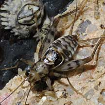
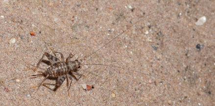
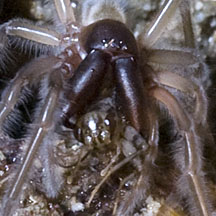

|
|
| arthropods text index | photo index |
| Phylum Arthropoda > Class Insecta |
| Shore
cricket Family Gryllidae updated Nov 2019 Where seen? This tiny cricket is sometimes seen on some of our shores. On rocky shores near the mid- to high-water mark, and sandy areas nearby. Usually more active at night. Features: Body about 1cm long. A fat bodied insect with long back legs and very long antennae. Usually crawls slowly and only hops to escape predators. The Marine spider (Desis martensi) has been seen preying on these crickets. |
 East Coast, Aug 09 |
 St John's Island, Oct 11 |
 Caught by a Marine spider. Kusu Island, Apr 08 |
| Shore crickets on Singapore shores |
On wildsingapore
flickr
|
Links
|